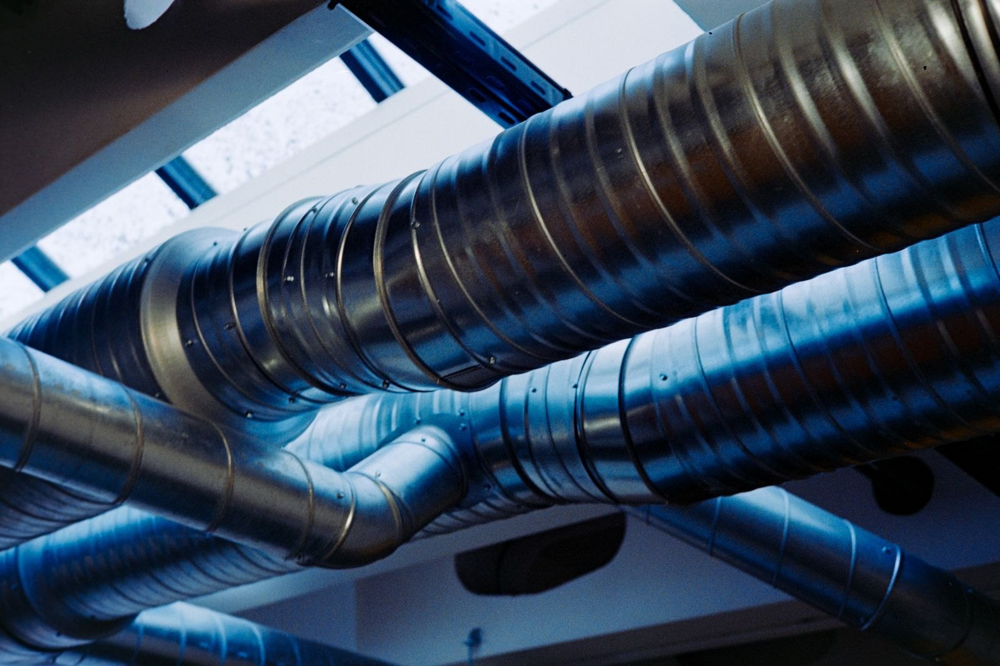
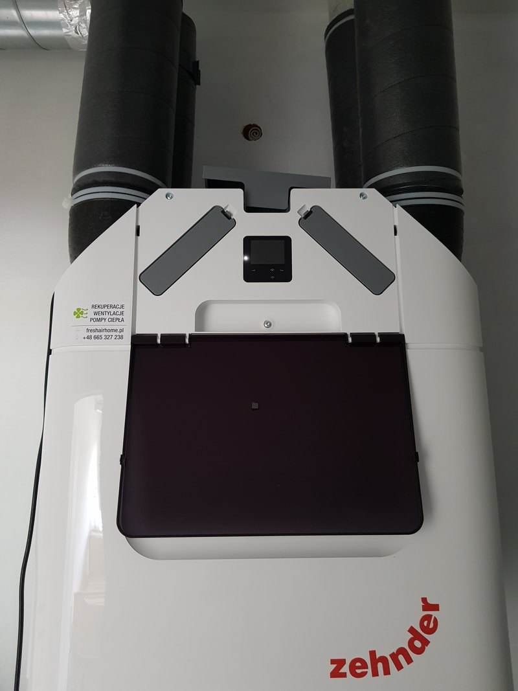
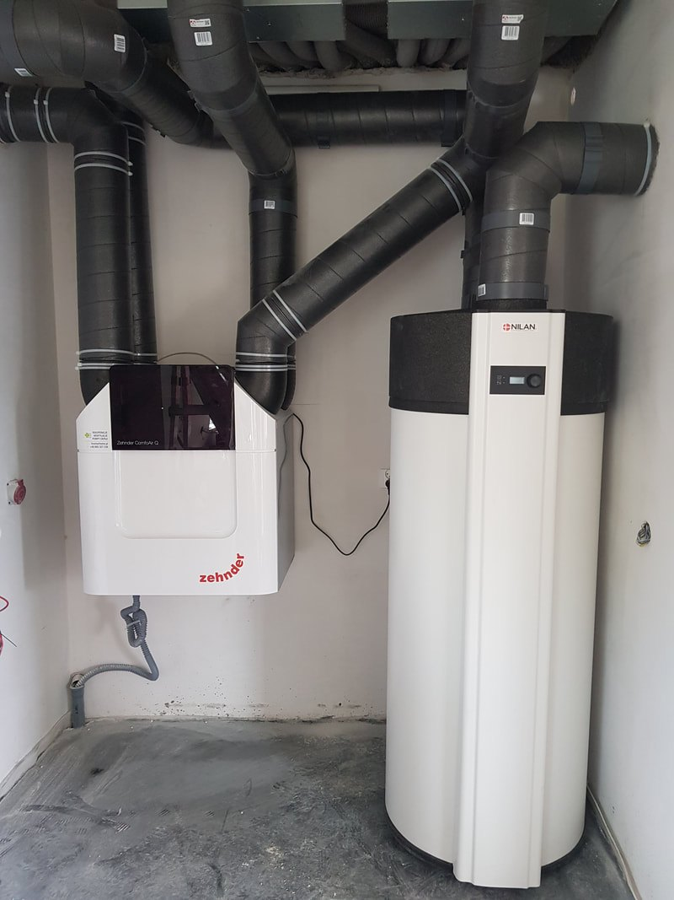
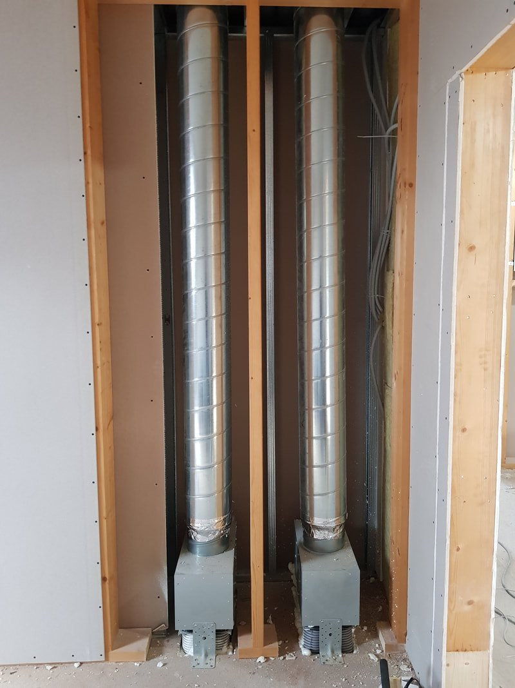
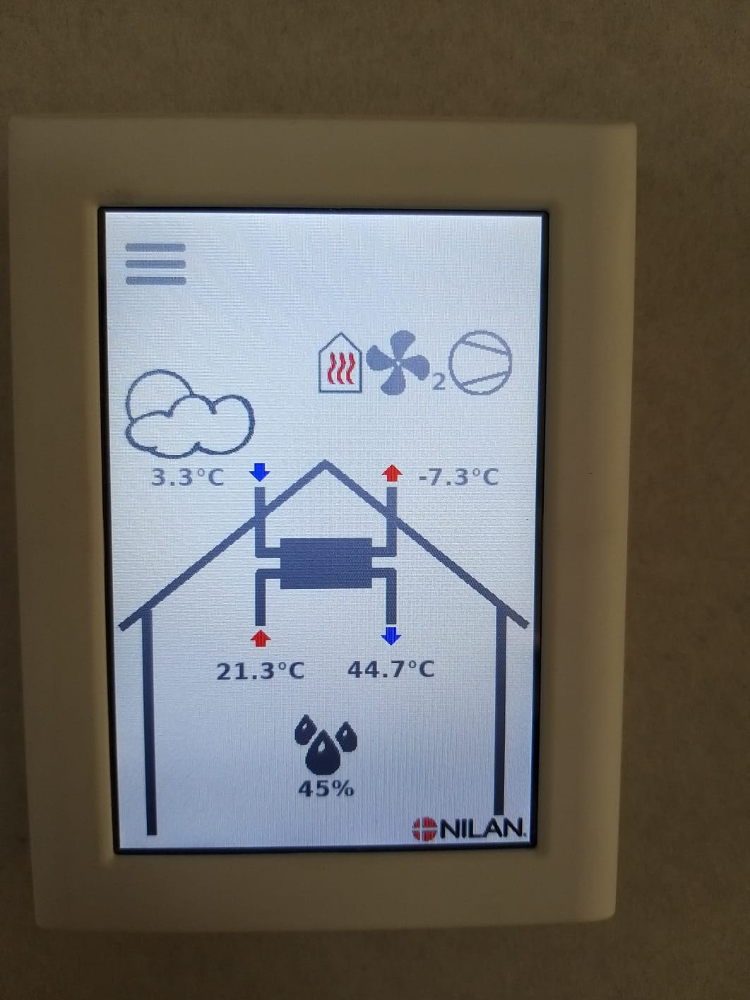
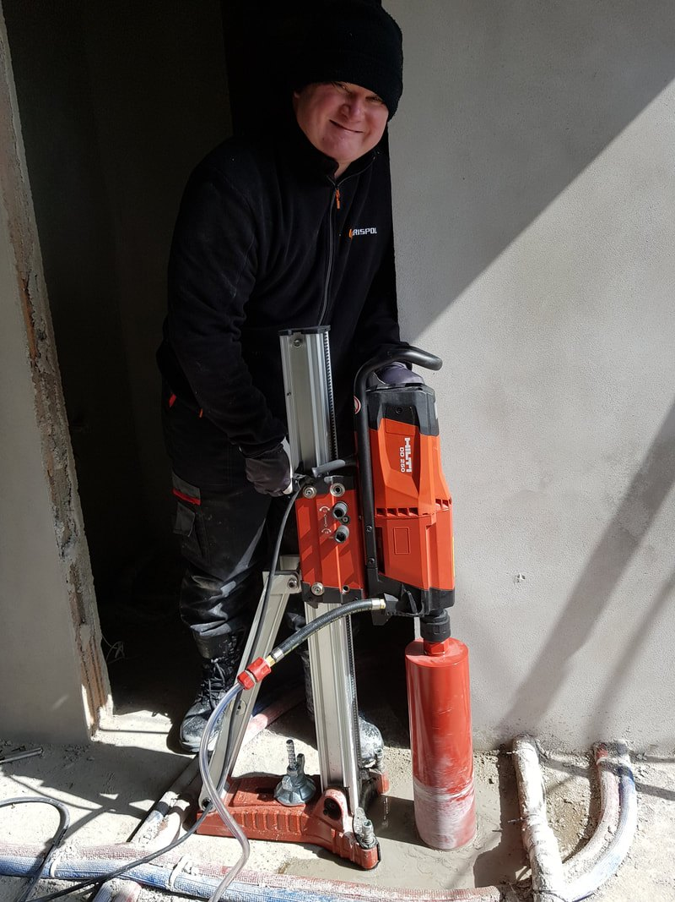

Centrale Zehnder i Nilan, trasy kanałów, panele sterowania, gruntowe wymienniki, klimatyzacja i pompy ciepła. Bez wizualizacji i zdjęć z katalogu producenta.
Filtry przełączają widok, a kliknięcie w zdjęcie otwiera je w powiększeniu.
25 zdjęć z instalacji, które wykonaliśmy.













Każde z tych zdjęć pochodzi z instalacji, którą wykonaliśmy. Przy wycenie pokazujemy więcej, także rozwiązania z budynków podobnych do Twojego.
Kilka rzeczy, po których poznasz, że instalacja jest zrobiona porządnie. Warto sprawdzić je również u innych wykonawców.
Opisz budynek i etap prac. Powiemy, co da się poprowadzić i ile to kosztuje.